Radial Schrödinger and Dirac Equations¶
Variational Formulation of the Schrödinger equation¶
Lagrangian is:
Subject to the normalization constrain:
The action is:
Variating it (subject to the normalization condition) we get:
Which gives the Schrödinger equation assuming the surface integral vanishes.
Note: to apply the variation  correctly, one uses the definition:
correctly, one uses the definition:
Weak Formulation¶
The weak formulation is obtained from the above by substituting (the test function) so we get:
Radial Schrödinger equation¶
There are two ways to obtain the radial Schrödinger equation. Either from the Lagrangian, or from the equation itself.
From the Equation¶
The way to solve it is to separate the equation into radial and angular parts by writing the Laplace operator in spherical coordinates as:
Substituting  into the Schrödinger equation
yields:
into the Schrödinger equation
yields:
Using the fact that we can cancel 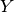 and we get the radial Schrödinger equation:
Normalization:
From the Lagrangian¶
We need to convert the Lagrangian to spherical coordinates. In order to easily make sure we do things covariantly, we start from the action (which is a scalar):
where we used the following properties of spherical harmonics:
We now minimize the action (subject to the normalization ) to obtain the radial equation:
So the radial equation is:
(1)
In agreement with the previous result.
Solving for u=rR¶
We can also make the substitution and solve for 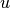:
and we substitute this to (1):
Perturbative Correction to Energy¶
We introduce  and
and  by and . The
radial Schrödinger equation is then:
by and . The
radial Schrödinger equation is then:
Let and  represent the radial wave function and its derivative at
and ,
represent the radial wave function and its derivative at
and ,  at , so the following holds:
at , so the following holds:
Now we evaluate using the relations above:

We integrate the last formula on the intervals and :
On the interval we know the exact solution corresponding to the
energies and by integrating outwards (the solution will eventually
diverge for large  except for the eigenvalues, but we only need it up to
) and we know that 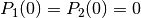, so we get:
except for the eigenvalues, but we only need it up to
) and we know that 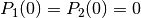, so we get:

where means that we need the values at when integrating the equation from the left (the value will generally be different when integrating the equation from the right, unless the energy is an eigenvalue). Similarly on the other interval where :
Taking the sum of the last two expressions:
Now we use the fact that and , because we match the two solutions from the left and right, so that the function is continuous (it’s derivative will have a jump though):
By requiring, that the energy is an eigenvalue, it follows that there is no jump in the derivative, so we set and we get:
that gives us an exact formula for the eigenvalue :
We approximate the value of by as well as the integral by and we get an approximation for the eigenenergy:
We use this approximation iteratively until the convergence is achieved (the
discontinuity in at  is small enough, or equivalently, the
correction to the energy is small enough).
is small enough, or equivalently, the
correction to the energy is small enough).
For Dirac equation, one obtains a similar formula:
So it is just the previous formula multiplied by and the normalization is
calculated using both and (as usual for the Dirac equation).
Weak Formulation¶
The weak formulation is obtained from the action above by substituting (the test function) so we get:
We can also start from the equation itself, multiply by a test function  :
:

We integrate it. Normally we need to be using 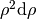 in order to integrate covariantly, but the above equation was already multiplied by (i.e. strictly speaking, it is not coordinate independent anymore), so we only integrate by 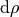:
After integration by parts:
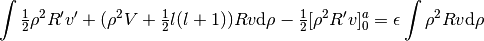
Where  is the end of the domain (the origin is at
is the end of the domain (the origin is at  ).
The boundary term is zero at the origin, so we get:
).
The boundary term is zero at the origin, so we get:
We usually want to have the boundary term  equal to zero.
This is equivalent to either letting (we prescribe the zero
derivative of the radial wave function at ) or we set (which
corresponds to zero Dirichlet condition for
equal to zero.
This is equivalent to either letting (we prescribe the zero
derivative of the radial wave function at ) or we set (which
corresponds to zero Dirichlet condition for  , i.e. setting ).
, i.e. setting ).
Dirac Notation¶
We can also write all the formulas using the Dirac notation:
Then normalization is:

The operator can be written as:
so to recover the above formula, we do:
Operator is symmetric, because:
The weak formulation is:
and we obtain the FE formulation by expanding (note that the basis is not orthogonal, so in particular ):
This is a generalized eigenvalue problem.
In the special case of an orthonormal basis,  (which FE is not), we get:
(which FE is not), we get:
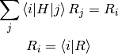
Which is an eigenvalue problem.
Variational Formulation of the Dirac equation¶
The QED Lagrangian density is
where:
We will treat the fields as classical fields, so we get the classical wave Dirac equation, after plugging this Lagrangian into the Euler-Lagrange equation of motion:
Notice that the Lagrangian happens to be zero for the solution of Dirac equation (e.g. the extremum of the action). This has nothing to do with the variational principle itself, it’s just a coincindence.
In this section we are only interested in the Dirac equation, so we write the Lagrangian as:
![\L=\bar\psi(i\hbar c\gamma^\mu D_\mu-mc^2)\psi =
=\psi^\dag\gamma^0(i\hbar c\gamma^\mu D_\mu-mc^2)\psi=
=\psi^\dag\gamma^0(i\hbar c\gamma^0(\partial_0+{i\over\hbar}eA_0)+ic\gamma^i (\partial_i+{i\over\hbar}eA_i)-mc^2)\psi=
=\psi^\dag(i\hbar c\partial_0+i\hbar c\gamma^0\gamma^i\partial_i-\gamma^0mc^2-ceA_0 -ce\gamma^0\gamma^iA_i)\psi=
=\psi^\dag(i\hbar{\partial\over\partial t}+c\alpha^i p_i-\beta mc^2-ceA_0-ce\alpha^iA_i)\psi=
=-\psi^\dag(-i\hbar{\partial\over\partial t}+c\alpha^i (-p_i+eA_i)+\beta mc^2+ceA_0)\psi=
=-\psi^\dag(-i\hbar{\partial\over\partial t}+c{\boldsymbol\alpha}\cdot({\bf p}-e{\bf A})+\beta mc^2+V)\psi](../../_images/math/86d1ae9da996a1ff93873dd5c09260a355cca7f9.png)
where we introduced the potential by . We also could have done the same manipulation to the dirac equation itself and we would get the same expression:
The corresponding eigenvalue problem is:
Radial Dirac equation¶
As for the Schrödinger equation, there are two ways to obtain the radial Dirac equation. Either from the Lagrangian, or from the equation itself.
From the Equation¶
The manipulations are well known, one starts by writing the Dirac spinors using
the spin angular functions and radial components and :
and putting this into the Dirac equation one obtains:

So one obtains the following radial equations:
From the Lagrangian¶
We can reuse the calculations from the previous sections, because the Lagrangian happens to be zero for the solution of the Dirac equation:
![\L=\bar\psi(i\hbar c\gamma^\mu D_\mu-mc^2)\psi =
=-\psi^\dag(-i\hbar{\partial\over\partial t}+c{\boldsymbol\alpha}\cdot({\bf
p}-e{\bf A})+\beta mc^2+V)\psi=
=
\left(\begin{array}{cc}{P\over\rho}\chi^{j_3}_\kappa &
-i{Q\over\rho}\chi^{j_3}_{-\kappa}\end{array}\right)
\left(\begin{array}{cc}
\left(-\hbar c \left({\d\over\d\rho} - {\kappa\over\rho}\right)Q + (V+mc^2)P\right) & 0\\
0 & \left(\hbar c \left({\d\over\d\rho} + {\kappa\over\rho}\right)P + (V-mc^2)Q\right)
\end{array}\right)
\left(
\begin{array}{c}
{1\over \rho}\chi^{j_3}_\kappa \\
i{1\over\rho}\chi^{j_3}_{-\kappa}
\end{array}
\right)
=
=
{1\over\rho^2}
P
\left(-\hbar c \left({\d\over\d\rho} - {\kappa\over\rho}\right)Q + (V+mc^2)P\right)
\chi^{j_3}_\kappa\chi^{j_3}_\kappa
+
{1\over\rho^2}
Q
\left(\hbar c \left({\d\over\d\rho} + {\kappa\over\rho}\right)P + (V-mc^2)Q\right)
\chi^{j_3}_{-\kappa}\chi^{j_3}_{-\kappa}](../../_images/math/042fb9d61ef26a98be386b7fa81ec9d5b51def8f.png)
We can now write the action:
the spin angular functions integrate to  :
:
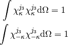
the cancels out and we get:
the normalization condition is:
and we can variate the action, we also shift the energy :
which effectively adds into the Lagrangian, which changes the term into . We can now variate the (constrained) action:
![0=\delta\int -\hbar c(PQ' - QP') + \hbar c {2\kappa\over\rho} PQ +
V(P^2+Q^2) - 2m c^2 Q^2 \d\rho=
= 2\int \left(-\hbar c((\delta P)Q' - P'\delta Q) + \hbar c{\kappa\over\rho}
((\delta P)Q + P\delta Q)) + (P\delta P + Q\delta Q)V
-2mc^2Q\delta Q - \epsilon(P\delta P + Q\delta Q)\right)\d\rho
+[P\delta Q - Q\delta P]^R_0 =
= 2\int
\delta P \left(-\hbar c Q' + \hbar c{\kappa\over\rho}Q + PV - \epsilon P
\right)+
\delta Q \left(\hbar c P' + \hbar c{\kappa\over\rho}P + QV - 2mc^2Q - \epsilon Q
\right)\d\rho
+[P\delta Q - Q\delta P]^R_0 =](../../_images/math/0b084b7de32de995180e2583b0801a5a710e5b7e.png)
which gives the two radial equations:
Weak Formulation¶
The weak formulation can be obtained by substituting and into the action above (and separating the integrals) and omitting the the boundary term:
We can also start from the radial equations themselves to get the same result. If we start from the equations themselves (which is the most elementary approach), there are no boundary terms (because we didn’t integrate by parts). We can separate the integrals according to the matrix elements that they contribute to:

To show that this problem generates a symmetric matrix, it is helpful to write the radial equations in the following form:
where:
the operator is Hermitean (), because :
and all the other quantities are just scalars.
Stricly speaking, the exact Dirac notation (that is coordinate/representation independent) would be the following (notice the missing in the completeness relation, which is different to the radial Schrödinger equation):
![\hat H \ket{P, Q} = \epsilon \ket{P, Q}
\one = \int \d\rho \ket{\rho}\bra{\rho}
\braket{\rho|\rho'} = \delta(\rho-\rho')
\int
\braket{\rho|\hat H|\rho'}\braket{\rho'|P, Q}\d\rho'
= \epsilon \braket{\rho|P, Q}
\braket{\rho|P, Q} =
\left(\begin{array}{c} P(\rho) \\ Q(\rho)\end{array}\right)
\braket{\rho|\hat H|\rho'} = \delta(\rho-\rho')
\left(\begin{array}{cc}
V(\rho) & \hbar c \left(-{\d\over\d\rho}+{\kappa\over\rho}\right) \\
\hbar c \left({\d\over\d\rho}+{\kappa\over\rho}\right) & V(\rho) - 2mc^2 \\
\end{array}\right)](../../_images/math/9af14053a1c0129be733a70953e97c4d147f8613.png)
The normalization is:
The weak formulation is:
where the test function  is one of:
is one of:
The FE formulation is then obtained by expanding :
The basis  can be for example the FE basis, some spline basis set, or
gaussians. The basis has actually 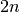 base functions and it enumerates each
equation like this:
can be for example the FE basis, some spline basis set, or
gaussians. The basis has actually 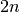 base functions and it enumerates each
equation like this:
So at the end of the day, the matrix looks like this:
The matrix is , composed of those 4 matrices  . The
matrix looks like this:
. The
matrix looks like this:
We can also write the matrix elements explicitly. Let , then:
Other Forms of Dirac Equations¶
The radial Dirac equations are:

After substitution and , we get:
where:
and after using:
we get:
Example I¶
In order to obtain equations for 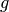 and  , related to and by:
, related to and by:
so and
and we get the radial Dirac equation for and :
Asymptotic¶
Schrödinger¶
The radial Schrödinger equation is:
For  , assuming
, assuming  we get:
we get:

And the asymptotic is:
For  and assuming that can be neglected compared to the
term (for example is ok) we get:
and assuming that can be neglected compared to the
term (for example is ok) we get:
And the asymptotic is:
Dirac¶
The Dirac equation is:
Where the relativistic energy . In terms of the nonrelativistic energy it becomes:
For , assuming  we get:
we get:
and in terms of and :
let’s put the derivatives on the left hand side:
write a second order equation:
and finally we get:
The asymptotic is:
For we write the full equations:
The we assume and use the second equation to express :
We can always write any potential as and we get:
If as then the term goes to zero and we get:
If , then we get:
If (harmonic oscillator) or , then the term goes to zero and we get: